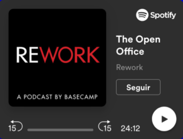
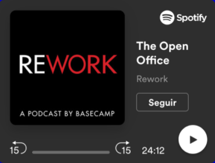

Hello world pale blue dot.
Un podcast que explora el mundo de la programación. Nuevos episodios, todos los jueves cada 15 días.
Episodios

 



De dónde venimos
Our posturings, our imagined self-importance, the delusion that we
have some privileged position in the Universe, are challenged by this
point of pale light.
Our planet is a lonely speck in the great
enveloping cosmic dark. In our obscurity, in all this vastness, there
is no hint that help will come from elsewhere to save us from
ourselves.
Invitadas/os estelares


Algunos de nuestros temas
 Trabajo remoto
Trabajo remoto
 Repensando la programación
Repensando la programación
 Bases del código
Bases del código
 Seguridad informática
Seguridad informática